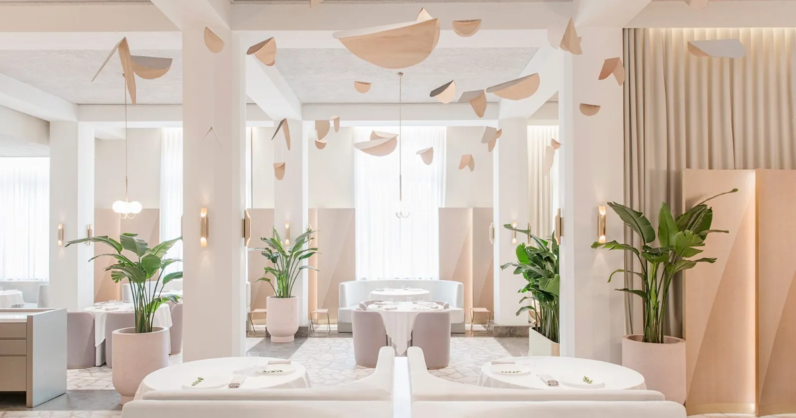
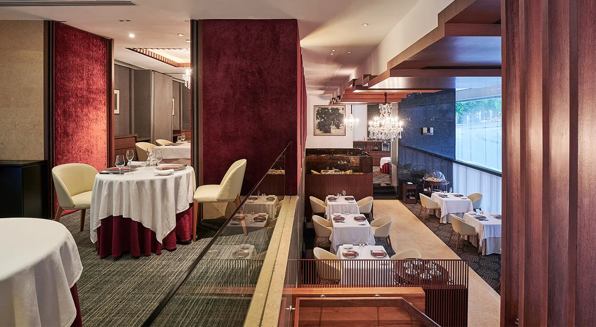
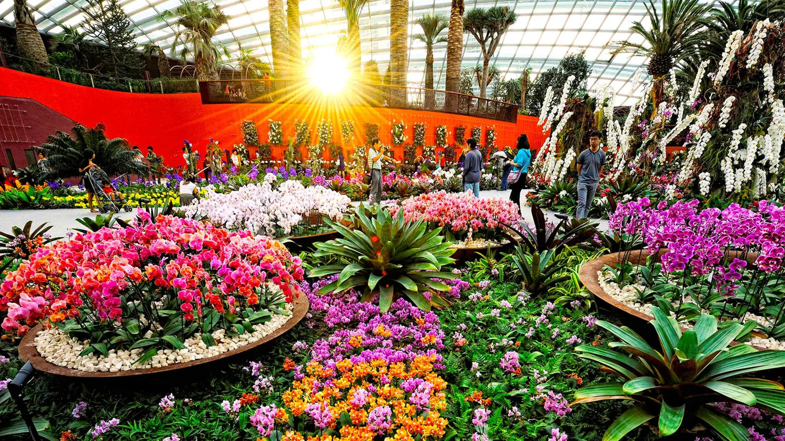

Two Michelin three-star tables. A hawker trail. Culture walks, rooftop bars, and a tech-event calendar that turns a weekend into a justified work trip.


The 75-minute gap in last seatings (8:15 PM vs 9:30 PM) shapes two structurally different Saturdays. Pick the arc that matches your dinner choice.

Free beyond the Orchid Garden (S$15 foreign / S$5 local). Half-day. Singapore's only UNESCO World Heritage Site in this category — opens 8:30am.[19]
250 m suspension bridge · 4.5 km approach trail · macaques en route. Tue–Fri 9am–5pm; weekends from 8:30am. Best early morning before heat.[20]
A five-day stay covering the dinner weekend + a conference turns this into a justifiable work trip. Best stacks below.
| Item | Detail |
|---|---|
| SG Service charge | Restaurants add 10% service + 9% GST — menu price is ~19% below what you pay. The Long Bar Sling (S$39 → ~S$47) is the canonical example.[18] |
| Odette deposit | Non-refundable deposit required at booking. Cannot accommodate dairy allergy.[3] |
| Les Amis groups 6+ | Call the restaurant directly — online booking is for smaller parties.[5] |
| Best morning timing | Gardens by the Bay conservatories at 9am open (beat heat + queues).[11] MacRitchie weekends from 8:30am. Newton chilli crab: go 6–7pm or after 9:30pm. |
| Tourist traps to skip | Singapore Flyer (~S$40, shorter view than MBS). MBS SkyPark deck if view is the only reason — CÉ LA VI skybar gets you the same height plus a cocktail.[6] |
| Hawker budget | UNESCO-listed hawker culture. Most Bib Gourmand plates S$3–10. Eating two hawker meals + one 3-star dinner on the same day is normal and intentional.[15] |
| SWITCH deadline | SLINGSHOT deep-tech startup pitch competition — application deadline Jun 30, 2026 for the Oct 27–29 event.[9] |